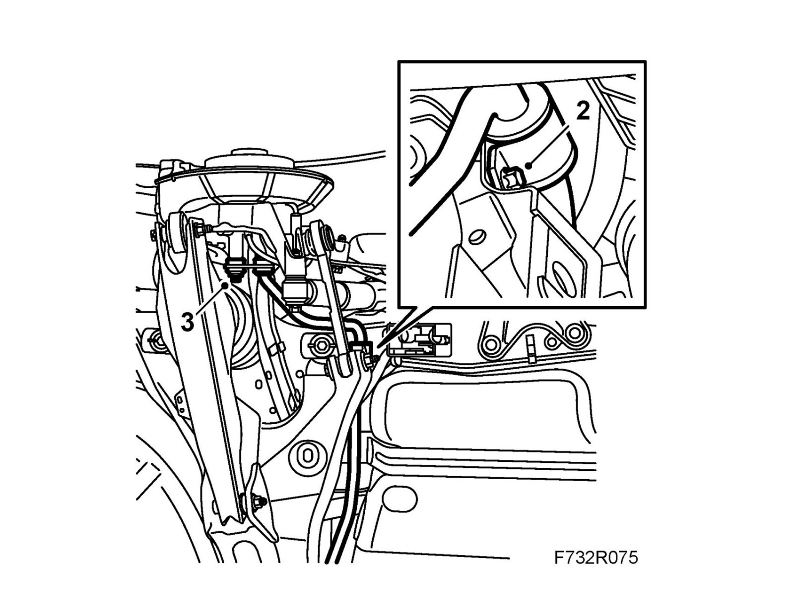

Rear Suspension
Anti-roll bar bush, rearTo remove
1. Raise the car.
2. Detach the anti-roll bar from the steering swivel members.

3. Remove the anti-roll bar mountings from the subframe.
4. Remove the bushes from the anti-roll bar.
To fit
1. Clean the anti-roll bar and grease the inside of the bushes with 30 20 476 Ball bearing grease. Fit the bushes to the anti-roll bar and fit the caps.
2. Fit the anti-roll bar to the subframe.
Tightening torque bolt 88 (flange diameter 15.2 mm): 18 Nm (13 lbf ft) and use Thread locking adhesive, Loctite 242
Tightening torque bolt 109 (flange diameter 16.7 mm): 31 Nm (23 lbf ft)
3. Fit the anti-roll bar link to the steering swivel member on both sides.
Tightening torque 53 Nm (39 lbf ft)
4. Lower the car to the floor.